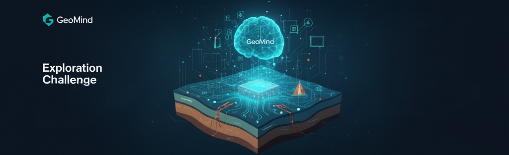
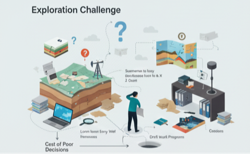

Turn Decades of Proprietary Basin Knowledge into Instant, Citable Insight. GeoMind is a secure, domain-specific GenAI assistant, powered by Retrieval-Augmented Generation (RAG), that transforms how subsurface teams access and utilize your company’s exploration data.

Capital-intensive exploration decisions rely on synthesized insights, but decades of crucial subsurface knowledge remain **fragmented, unstructured, and hidden** within massive volumes of reports and files. Geoscientists are spending too much time searching—not interpreting.

Thousands of End-of-Well Reports, Basin Studies, and interpretation notes scattered across SharePoints, folders, and legacy systems. True insights are buried in unstructured text.
Weeks of manual document review are required to build a comprehensive prospect review or familiarize a new team member with a basin—time that should be spent on complex interpretation and risk modeling.
The retirement of senior experts and poor knowledge reuse lead to repeating past mistakes, misjudging reservoir risk, and the potential for costly dry or sub-economic wells.
GeoMind is your **Co-Pilot for Subsurface Discovery**, designed to preserve, connect, and instantly query your most valuable asset: proprietary exploration knowledge.
Query decades of internal reports using natural language (e.g., "What were the primary charge risks identified in the Eastern Graben play?"). Get concise answers grounded in your data.
Generate a first-draft summary of key tectonic, stratigraphic, and petroleum system events for any basin in your portfolio. Perfect for rapid familiarization or decision-document preparation.
Synthesize drill outcomes, detailed reservoir quality trends, and unexpected geological/operational risk factors from historical well reports, connecting success and failure to current prospect decisions.
Generate high-quality first drafts of technical notes, decision support memos, and slides for management reviews, dramatically accelerating the documentation workflow.
Junior staff and cross-asset transfers can rapidly achieve expert-level basin familiarity by querying the collective knowledge base, significantly reducing the learning curve.
Every answer is paired with **direct, auditable citations** and links back to the original source document (report page, seismic summary, well file), ensuring **trust and verifiability**.
GeoMind is powered by **Retrieval-Augmented Generation (RAG)**—a robust, enterprise-grade architecture that grounds the Generative AI model strictly in your proprietary data, controlling quality and ensuring security.
[Image of Retrieval-Augmented Generation (RAG) Architecture for Enterprise Data]GeoMind is a critical enabler, aligning subsurface needs with strategic digital transformation goals.
Exploration is a high-leverage business. Improving the quality of a single high-stakes decision has an outsized return. GeoMind drives value through risk reduction and massive productivity gains.
A single avoided dry well or misjudged appraisal decision can represent **tens to hundreds of millions of dollars** saved. GeoMind's cost is negligible compared to this leverage.
| Dimension | Before GenAI (Manual Review) | With GeoMind (RAG Assistant) |
|---|---|---|
| Time to prepare a Basin Brief for new staff | 4–6 Weeks | 1–3 Days |
| Time to prepare Well Decision Note (Source Review) | 1–2 Weeks | 30–60 Minutes |
| Number of sources checked per decision | Limited by human capacity (5–10) | Full Corpus Search (Hundreds) |
| Risk of Repeating Past Mistakes | Medium/High (Knowledge gaps) | Low (Comprehensive knowledge reuse) |
The most effective path to enterprise adoption is a focused, measured Minimum Viable Product (MVP) pilot within one targeted area of high knowledge density and pain point.
Target: We recommend starting with **one high-priority basin** (e.g., "Northwest Deepwater Basin") or a key play where historical knowledge is most fragmented.
Start a focused pilot program today. Let's ground your GenAI strategy in your most valuable asset: your proprietary subsurface knowledge.
Contact our specialist team to define your pilot scope in a single, high-value basin.
Your information is confidential and will only be used to discuss your GeoMind deployment. We are experts in data governance and security.